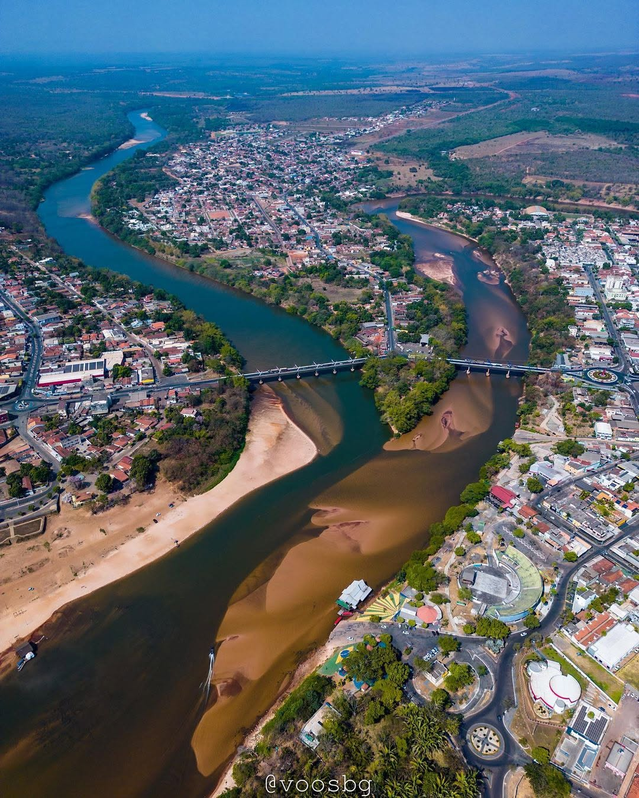

Conheça o lugar

1 / 1As Praias do Rio Araguaia representam o ápice do turismo de veraneio na região de Barra do Garças, transformando a paisagem do município durante os meses de seca da bacia hidrográfica. Quando as águas do imponente rio baixam, revelam-se extensos bancos de areia branca e fina, que se transformam em verdadeiros resorts naturais ao ar livre, atraindo milhares de turistas de todo o país. A temporada de praias, que ocorre geralmente entre os meses de junho e agosto, movimenta intensamente a economia local, impulsionando hotéis, restaurantes e o setor de serviços de Barra do Garças. Estruturas temporárias de alto padrão, incluindo palcos para shows, barracas de alimentação e postos de salvamento, são montadas na areia para garantir o conforto e a segurança dos banhistas. As águas do Rio Araguaia nesse período do ano apresentam-se mornas, calmas e ideais para o banho de toda a família, funcionando como um mar de água doce no coração do Brasil. A largueza do rio proporciona um horizonte amplo, onde o pôr do sol se reflete no espelho d'água de forma espetacular, criando um dos cenários fotográficos mais famosos do país. A prática de esportes náuticos ganha enorme força durante a temporada, com o rio sendo cortado por motos aquáticas, lanchas, caiaques e pranchas de Stand Up Paddle. Além disso, as areias das praias tornam-se arenas improvisadas para campeonatos de futevôlei, vôlei de praia e peteca, mantendo os jovens e adultos ativos durante todo o dia.
O acampamento nas praias do Araguaia é uma tradição cultural enraizada, com famílias inteiras montando verdadeiras vilas de barracas dotadas de geradores, cozinhas comunitárias e áreas de convivência. Essa vivência comunitária na areia, sob a sombra de tendas e ao som de música caipira ou modas de viola, define o espírito festivo do veraneio goiano e mato-grossense. A gastronomia das barracas de praia é rica em peixes nativos do Araguaia, como o tucunaré, o pintado e a cachara, servidos fritos em postas ou na tradicional caldeirada. Saborear um peixe fresco acompanhado de uma bebida gelada, com os pés imersos na água doce do rio, é uma das experiências sensoriais mais valorizadas por quem frequenta a região. A sustentabilidade ambiental durante a temporada de praias é um desafio constante gerido com rigor pelas autoridades municipais e estaduais de meio ambiente. Campanhas intensas de recolhimento de lixo e conscientização ecológica são realizadas diariamente, garantindo que as areias permaneçam limpas e que a fauna aquática não seja prejudicada pelos resíduos dos turistas. O Rio Araguaia também é famoso mundialmente pela pesca esportiva, atraindo pescadores que buscam fisgar grandes exemplares de piraíbas e pirararas na modalidade de pesque e solte. As praias servem como pontos de partida e abastecimento para os barcos dos pescadores, que passam o dia explorando os poços mais profundos do rio atrás dos gigantes aquáticos.
A segurança dos banhistas é uma prioridade absoluta, com equipes do Corpo de Bombeiros monitorando constantemente as áreas de banho demarcadas para evitar afogamentos e acidentes com embarcações. Os turistas são orientados a respeitar as correntezas naturais do rio e a evitar áreas profundas não sinalizadas, garantindo uma estadia sem intercorrências negativas. À noite, o clima nas praias do Araguaia se transforma, com as barracas iluminadas por luzes coloridas e o som de shows ao vivo agitando o público jovem na beira do rio. É o momento em que a brisa do rio refresca o calor do dia e as pessoas se reúnem para socializar, dançar e saborear petiscos sob o céu estrelado do interior do Brasil. O turismo acessível tem ganhado espaço nas praias do Araguaia, com a implementação de passarelas de madeira que facilitam o deslocamento de cadeirantes e carrinhos de bebê até a proximidade da água. Essas iniciativas buscam democratizar o acesso à beleza do rio, garantindo que todos, independentemente da mobilidade, possam desfrutar do veraneio. Em conclusão, as Praias do Rio Araguaia são o coração pulsante do verão em Barra do Garças, representando uma celebração da vida, da música e da beleza hídrica brasileira. Visitar essas praias é submergir em uma cultura de hospitalidade calorosa, onde a grandiosidade do rio abraça o visitante e deixa uma vontade permanente de retornar a cada nova temporada.
As condições de acesso, funcionamento, valores e regras podem mudar. Confirme as informações com responsáveis ou órgãos locais antes de realizar o passeio.